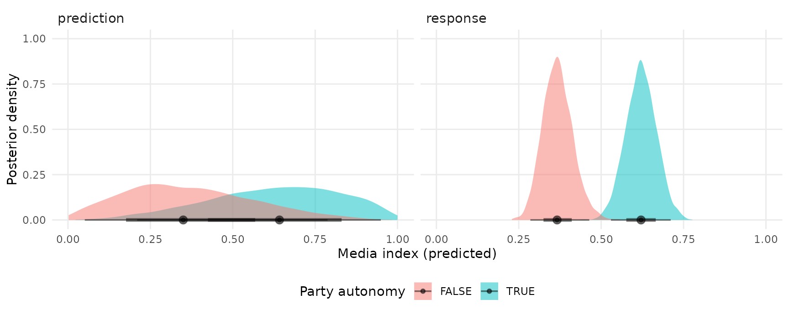
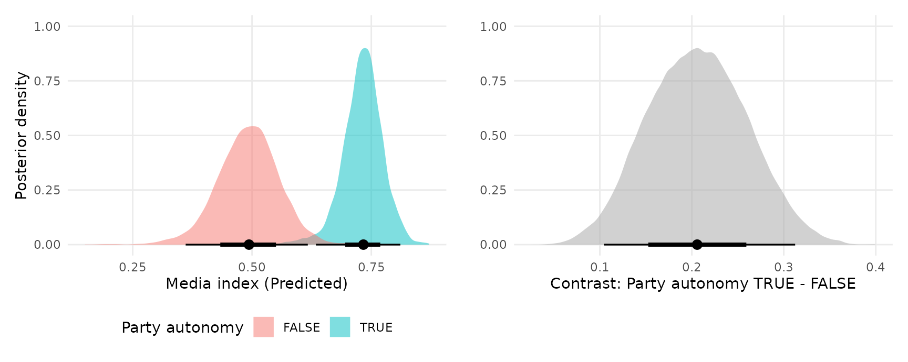

Notes and Caveats
Support for brms is still experimental. Bug reports and feature requests can be submitted here: https://github.com/vincentarelbundock/marginaleffects/issues
I hope to improve performance considerably in the very near future.
Install the development version of the marginaleffects package:
A simple logistic regression model
Load libraries:
Fit a logit model with a multiplicative interaction:
Use marginaleffects() to compute marginal effects for each row of the dataset, and use summary() to compute “Average Marginal Effects”:
mfx <- marginaleffects(mod)
summary(mfx)
#> Average marginal effects
#> type Term Effect
#> 1 response hp 0.007531
#> 2 response mpg 0.161988
#> 3 response vs -0.119982
#>
#> Model type: brmsfit
#> Prediction type: responseCompute marginal effects with some regressors fixed at user-specified values, and other regressors held at their means:
marginaleffects(mod, newdata = typical(hp = c(110, 130)))
#> rowid type term dydx conf.low conf.high mpg vs hp
#> 1 1 response mpg 0.084090460 1.831918e-08 0.39989782 20.09062 0.4375 110
#> 2 1 response vs -0.002585918 -4.692995e-01 0.27051627 20.09062 0.4375 110
#> 3 1 response hp 0.003546581 8.278697e-10 0.01590624 20.09062 0.4375 110
#> 4 2 response mpg 0.607124894 9.256393e-02 1.44713492 20.09062 0.4375 130
#> 5 2 response vs -0.054583402 -1.047867e+00 0.99498506 20.09062 0.4375 130
#> 6 2 response hp 0.026031284 2.476147e-03 0.06346233 20.09062 0.4375 130
#> predicted
#> 1 0.06409249
#> 2 0.06409249
#> 3 0.06409249
#> 4 0.36906318
#> 5 0.36906318
#> 6 0.36906318The get_posterior_draws produces a dataset with drawid and draw columns.
draws <- get_posterior_draws(mfx)
dim(draws)
#> [1] 384000 13
head(draws)
#> type drawid draw rowid term dydx conf.low conf.high
#> 1 response 1 4.197217e-01 1 mpg 0.67494519 9.914753e-04 1.74448645
#> 2 response 1 4.197217e-01 1 vs -0.33122390 -1.003151e+00 0.23192587
#> 3 response 1 6.501418e-01 1 hp 0.02338537 2.083359e-05 0.05959131
#> 4 response 1 4.768561e-01 2 mpg 0.67494519 9.914753e-04 1.74448645
#> 5 response 1 5.652120e-01 2 vs -0.33122390 -1.003151e+00 0.23192587
#> 6 response 1 6.170269e-05 2 hp 0.02338537 2.083359e-05 0.05959131
#> am mpg vs hp predicted
#> 1 1 21 0 110 0.5921967
#> 2 1 21 0 110 0.5921967
#> 3 1 21 0 110 0.5921967
#> 4 1 21 0 110 0.5921967
#> 5 1 21 0 110 0.5921967
#> 6 1 21 0 110 0.5921967We can use this dataset to plot our results. For example, to plot the posterior density of the marginal effect when the vs variable is equal to 0 or 1:
mfx <- marginaleffects(mod,
variables = "mpg",
newdata = typical(vs = 0:1)) |>
get_posterior_draws()
ggplot(mfx, aes(x = draw, fill = factor(vs))) +
stat_halfeye(slab_alpha = .5) +
labs(x = "Marginal effect of Miles per Gallon",
y = "Posterior density",
fill = "Engine shape (vs)")
A similar strategy can be used to compute and display model predictions with the predictions function:
mod <- brm(mpg ~ hp * vs + am, data = mtcars)
pred <- predictions(mod, newdata = typical(vs = 0:1, hp = c(100, 200))) |>
get_posterior_draws()
ggplot(pred, aes(y = factor(vs), x = draw)) +
stat_gradientinterval() +
facet_wrap(~ hp) +
labs(x = "Predicted Miles per Gallon",
y = "Engine shape (vs)")
More fun, courtesy to Andrew Heiss
Andrew Heiss publishes a ton of useful resources on statistics in R on his website. Here, I replicate the analysis in his post: “A guide to correctly calculating posterior predictions and average marginal effects with multilievel Bayesian models.” My goal is only to illustrate the use of marginaleffects. Please refer to the original post for a detailed discussion of the quantities computed below.
Load libraries and clean data:
remotes::install_github("vdeminstitute/vdemdata")
library(vdemdata)
library(tidyverse)
library(marginaleffects)
library(brms)
library(ggdist)
library(patchwork)
vdem_2015 <- vdem %>%
select(country_name, country_text_id, year, region = e_regionpol_6C,
media_index = v2xme_altinf, party_autonomy_ord = v2psoppaut_ord,
polyarchy = v2x_polyarchy, civil_liberties = v2x_civlib) %>%
filter(year == 2015) %>%
mutate(party_autonomy = party_autonomy_ord >= 3,
party_autonomy = ifelse(is.na(party_autonomy), FALSE, party_autonomy)) %>%
mutate(region = factor(region,
labels = c("Eastern Europe and Central Asia",
"Latin America and the Caribbean",
"Middle East and North Africa",
"Sub-Saharan Africa",
"Western Europe and North America",
"Asia and Pacific")))Fit a basic model:
mod <- brm(
bf(media_index ~ party_autonomy + civil_liberties + (1 | region),
phi ~ (1 | region)),
data = vdem_2015,
family = Beta(),
control = list(adapt_delta = 0.9),
cores = 4,
seed = 12345)Compute two types of posterior predictions, with or without accounting for residual (observation-level) variance.
pred <- predictions(mod,
type = c("response", "prediction"),
newdata = typical(party_autonomy = c(TRUE, FALSE),
civil_liberties = .5,
region = "Middle East and North Africa"))
pred
#> type predicted conf.low conf.high party_autonomy civil_liberties
#> 1 response 0.6219782 0.5318573 0.7137691 TRUE 0.5
#> 2 prediction 0.6352045 0.2478614 0.9698960 TRUE 0.5
#> 3 response 0.3692581 0.2866428 0.4627307 FALSE 0.5
#> 4 prediction 0.3505728 0.0210234 0.7417782 FALSE 0.5
#> region
#> 1 Middle East and North Africa
#> 2 Middle East and North Africa
#> 3 Middle East and North Africa
#> 4 Middle East and North AfricaExtract posterior draws and plot them:
pred <- get_posterior_draws(pred)
ggplot(pred, aes(x = draw, fill = party_autonomy)) +
stat_halfeye(alpha = .5) +
facet_wrap(~ type) +
labs(x = "Media index (predicted)",
y = "Posterior density",
fill = "Party autonomy")
Marginal effects
As noted in the Marginal Effects vignette, there should be one distinct marginal effect for each combination of regressor values. Here, we consider only one combination of regressor values, where region is “Middle East and North Africa”, and civil_liberties is 0.5. Then, we calculate the mean of the posterior distribution of marginal effects:
mfx <- marginaleffects(mod,
newdata = typical(civil_liberties = .5,
region = "Middle East and North Africa"))
mfx
#> rowid type term dydx conf.low conf.high
#> 1 1 response party_autonomyTRUE 0.2516837 0.1666480 0.3291001
#> 2 1 response civil_liberties 0.8153653 0.6302967 1.0045474
#> party_autonomy civil_liberties region predicted
#> 1 TRUE 0.5 Middle East and North Africa 0.6210441
#> 2 TRUE 0.5 Middle East and North Africa 0.6210441Use the get_posterior_draws() to extract draws from the posterio distribution of marginal effects, and plot them:
mfx <- get_posterior_draws(mfx)
ggplot(mfx, aes(x = draw, y = term)) +
stat_halfeye() +
labs(x = "Marginal effect", y = "")
Plot marginal effects, conditional on a regressor:
plot_cme(mod,
effect = "civil_liberties",
condition = "party_autonomy")
Continuous predictors
pred <- predictions(mod,
newdata = typical(party_autonomy = FALSE,
region = "Middle East and North Africa",
civil_liberties = seq(0, 1, by = 0.05))) |>
get_posterior_draws()
ggplot(pred, aes(x = civil_liberties, y = draw)) +
stat_lineribbon() +
scale_fill_brewer(palette = "Reds") +
labs(x = "Civil liberties",
y = "Media index (predicted)",
fill = "")
The slope of this line for different values of civil liberties can be obtained with:
mfx <- marginaleffects(mod,
newdata = typical(civil_liberties = c(.2, .5, .8),
party_autonomy = FALSE,
region = "Middle East and North Africa"),
variables = "civil_liberties")
mfx
#> rowid type term dydx conf.low conf.high civil_liberties
#> 1 1 response civil_liberties 0.4898727 0.3664118 0.6353274 0.2
#> 2 2 response civil_liberties 0.8084583 0.6145173 0.9866632 0.5
#> 3 3 response civil_liberties 0.8061971 0.6816691 0.9351171 0.8
#> party_autonomy region predicted
#> 1 FALSE Middle East and North Africa 0.1721819
#> 2 FALSE Middle East and North Africa 0.3702684
#> 3 FALSE Middle East and North Africa 0.6234009And plotted:
mfx <- get_posterior_draws(mfx)
ggplot(mfx, aes(x = draw, fill = factor(civil_liberties))) +
stat_halfeye(slab_alpha = .5) +
labs(x = "Marginal effect of Civil Liberties on Media Index",
y = "Posterior density",
fill = "Civil liberties")
In Heiss’ blog post, the author uses emmeans, which computes predictions based on a “grand mean” which ignores group random effects. Behind the scenes, marginaleffects uses the get_predicted function from the insight package to extract predictions from the brms model. This function accepts a include_random argument, which we can pass direction to marginaleffects (the argument will be pushed forward through the ellipsis ...):
mfx <- marginaleffects(mod,
newdata = typical(civil_liberties = c(.2, .5, .8),
party_autonomy = FALSE,
region = "Middle East and North Africa"),
variables = "civil_liberties",
include_random = FALSE) |>
get_posterior_draws()
ggplot(mfx, aes(x = draw, fill = factor(civil_liberties))) +
stat_halfeye(slab_alpha = .5) +
labs(x = "Marginal effect of Civil Liberties on Media Index",
y = "Posterior density",
fill = "Civil liberties")
Global grand mean
pred <- predictions(mod,
include_random = FALSE,
newdata = typical(party_autonomy = c(TRUE, FALSE))) |>
get_posterior_draws()
mfx <- marginaleffects(mod,
include_random = FALSE,
variables = "party_autonomy") |>
get_posterior_draws()
plot1 <- ggplot(pred, aes(x = draw, fill = party_autonomy)) +
stat_halfeye(slab_alpha = .5) +
labs(x = "Media index (Predicted)",
y = "Posterior density",
fill = "Party autonomy")
plot2 <- ggplot(mfx, aes(x = draw)) +
stat_halfeye(slab_alpha = .5) +
labs(x = "Contrast: Party autonomy TRUE - FALSE",
y = "",
fill = "Party autonomy")
# combine plots using the `patchwork` package
plot1 + plot2
Region specific predictions and contrasts
Predicted media index by region and level of civil liberties:
pred <- predictions(mod,
newdata = typical(region = vdem_2015$region,
party_autonomy = FALSE,
civil_liberties = seq(0, 1, length.out = 100))) |>
get_posterior_draws()
ggplot(pred, aes(x = civil_liberties, y = draw)) +
stat_lineribbon() +
scale_fill_brewer(palette = "Reds") +
facet_wrap(~ region) +
labs(x = "Civil liberties",
y = "Media index (predicted)",
fill = "")
Predicted media index by region and level of civil liberties:
pred <- predictions(mod,
newdata = typical(region = vdem_2015$region,
civil_liberties = c(.2, .8),
party_autonomy = FALSE)) |>
get_posterior_draws()
ggplot(pred, aes(x = draw, fill = factor(civil_liberties))) +
stat_halfeye(slab_alpha = .5) +
facet_wrap(~ region) +
labs(x = "Media index (predicted)",
y = "Posterior density",
fill = "Civil liberties")
Predicted media index by region and party autonomy:
pred <- predictions(mod,
newdata = typical(region = vdem_2015$region,
party_autonomy = c(TRUE, FALSE),
civil_liberties = .5)) |>
get_posterior_draws()
ggplot(pred, aes(x = draw, y = region , fill = party_autonomy)) +
stat_halfeye(slab_alpha = .5) +
labs(x = "Media index (predicted)",
y = "",
fill = "Party autonomy") TRUE/FALSE contrasts (marginal effects) of party autonomy by region:
mfx <- marginaleffects(mod,
variables = "party_autonomy",
newdata = typical(region = vdem_2015$region,
civil_liberties = .5)) |>
get_posterior_draws()
ggplot(mfx, aes(x = draw, y = region , fill = party_autonomy)) +
stat_halfeye(slab_alpha = .5) +
labs(x = "Media index (predicted)",
y = "",
fill = "Party autonomy")